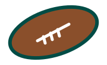

About the Team
The Philadelphia Eagles are a football team from Philadelphia, Pennsylvania. They play in the NFL. Their team colors are midnight green, silver, black, and white. Their home stadium is Lincoln Financial Field.

Learn more on the official Philadelphia Eagles website.
Eagles Traditions
The team started in 1933. One of the most famous Eagles traditions is singing “Fly, Eagles Fly,” the team fight song. Fans wear green and cheer loudly during games.
The Eagles won their first Super Bowl in 2018. It was an exciting moment for the team and its fans.
The Fans
Eagles fans are known for being passionate and loyal. People gather at the stadium, at home, and with friends to watch games. I like the Eagles because they represent Philadelphia and have a lot of team spirit.
Go Birds!